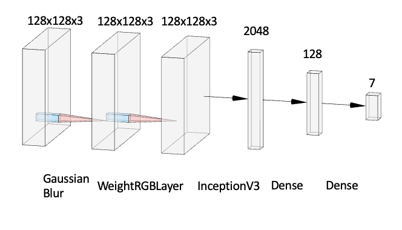
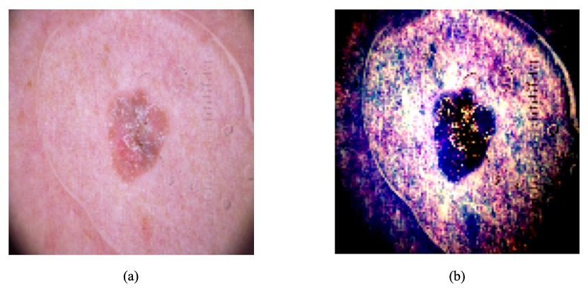
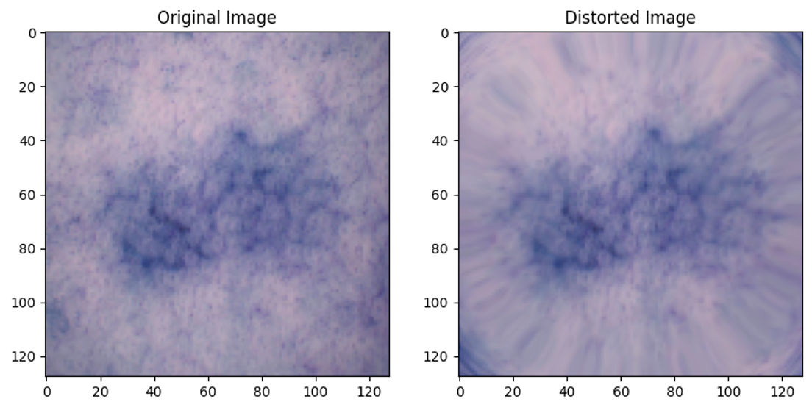

| Paper PDF |

|
Pigmented skin lesions identification plays an important role in accurately detecting harmful skin diseases, while image detection and classification techniques are now widely applied to improve the overall accuracy of skin cancer detection. Our project proposed an InceptionV3-based model enhanced by optimizing RGB weights (with WeightedRGBLayer) to classify the skin lesion image dataset HAM10000. Given the imbalanced distribution of the dataset, 100 images were sample from all seven categories, and augmented to construct a new set with 2800 images. A baseline was setup with a batch normalization layer and the InceptionV3 architecture resulting a 92% accuracy. As the WeightedRGBLayer being implemented prior to the InceptionV3 module, algorithm’s variance was reduced. Several operations on the images have been applied to the dataset to simulate different imaging conditions, including Gaussian blur and lens distortion. Our RGB-optimizing layer enhanced model performance, indicating better classification ability compared to those without the WeightedRGBLayer. |
|

(a) An example of original input image;

|
| Paper: |
| Code and Data: |